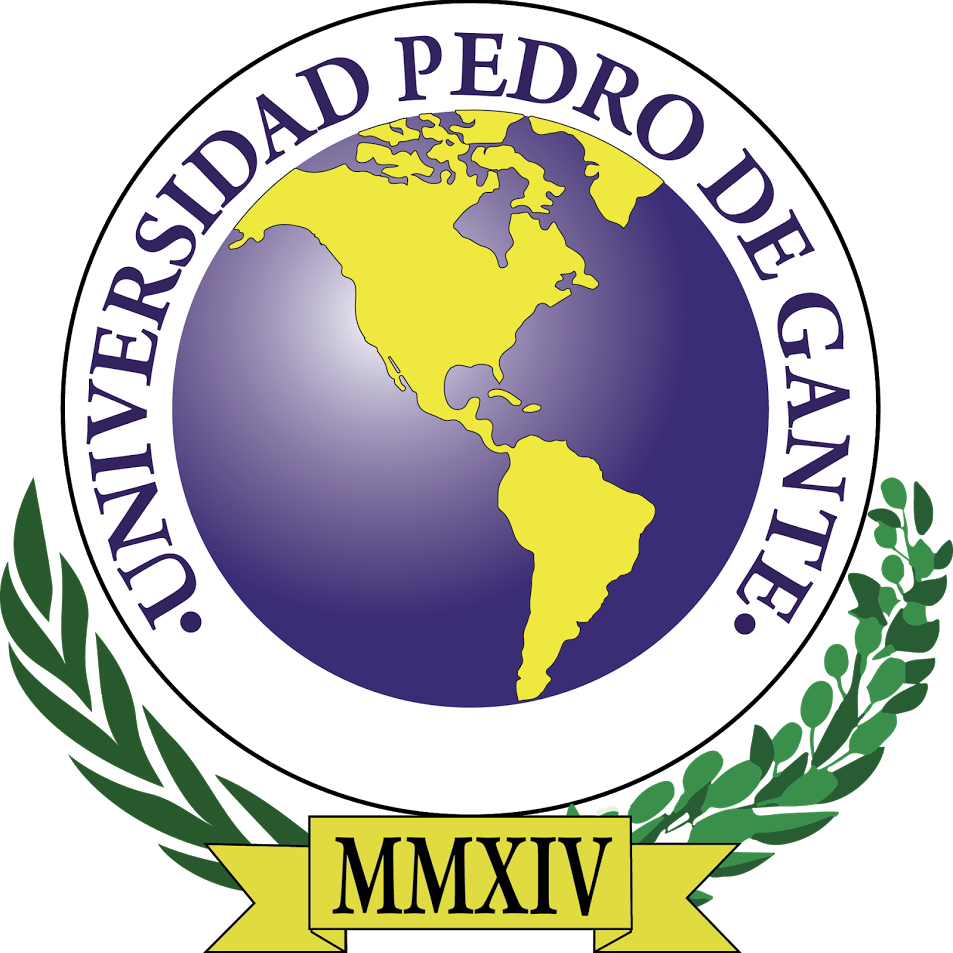
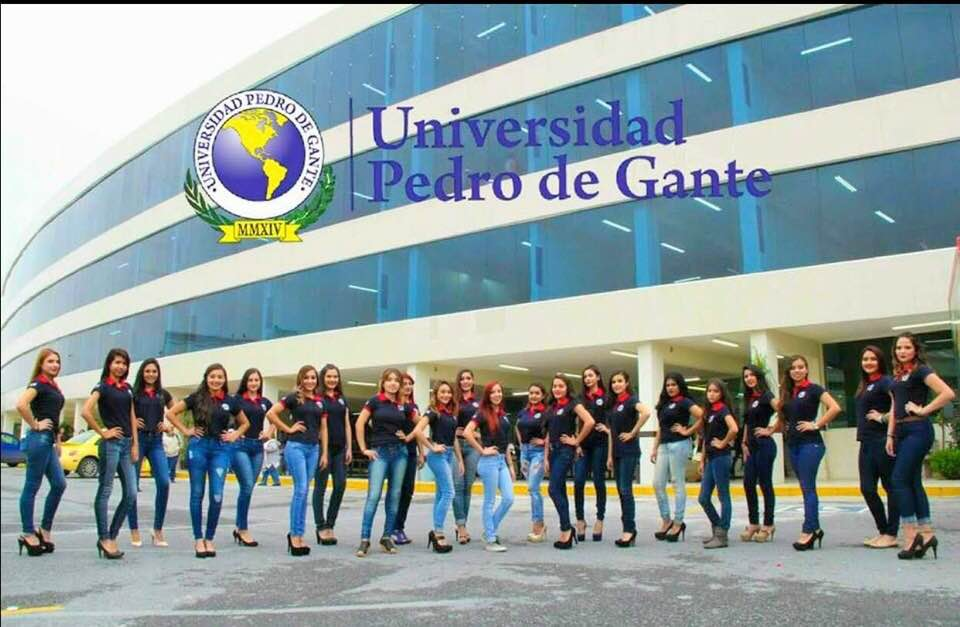
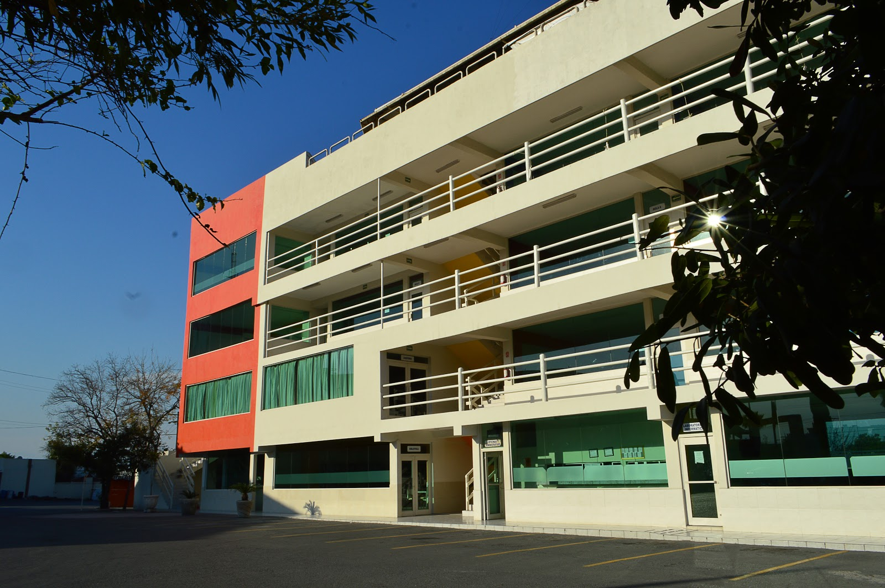
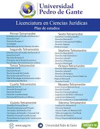

David Flores
¿Por qué elegí Ciencias Computacionales?
Elegí estudiar Ciencias Computacionales porque la tecnología y la informática son campos apasionantes que están en constante evolución y tienen un impacto profundo en todos los aspectos de la vida moderna. La elección de la Universidad Pedro de Gante como el lugar para realizar mis estudios en Ciencias Computacionales se basa en varios factores clave. Primero, la universidad ofrece un programa académico robusto y actualizado, con un enfoque práctico que me permitirá adquirir habilidades técnicas sólidas y experiencia real en el campo.



